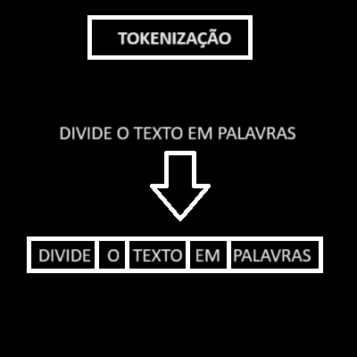
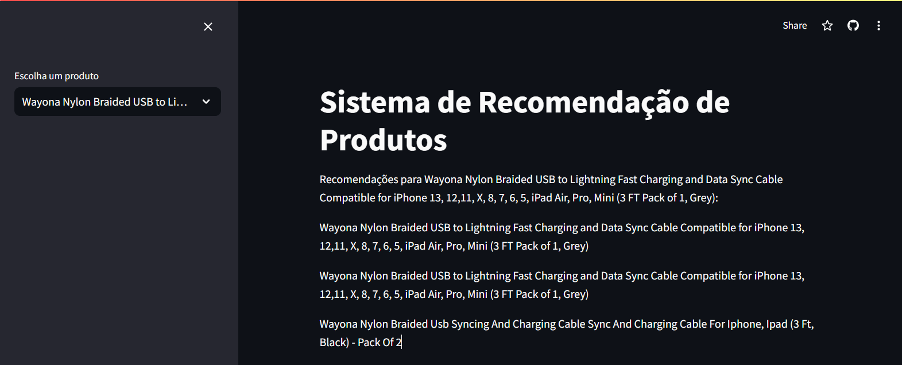

Sistema de Recomendação by Ricardo Amaral
Processamento de Linguagem Natural (PLN) para Extrair Recomendações a Partir das Descrições Textuais dos Produtos

Foto de Christian Wiediger na Unsplash
Este projeto é um sistema de recomendação de produtos utilizando um dataset da Amazon, baseado em técnicas de ciência de dados e aprendizado de máquina. O foco principal está na utilização de Processamento de Linguagem Natural (PLN) para extrair recomendações a partir das descrições textuais dos produtos. As técnicas de PLN são empregadas para analisar e transformar o texto dos produtos em uma forma que possibilite a comparação e recomendação de produtos semelhantes. O processo segue o modelo CRISP-DM, uma metodologia padrão para a mineração de dados, adaptada para transformar dados textuais em recomendações relevantes.
1. Entendimento do Negócio
O objetivo deste projeto é desenvolver um sistema de recomendação que sugira produtos semelhantes com base nas preferências do usuário. Isso é útil para ajudar os consumidores a encontrar produtos relacionados e aumentar a satisfação e as vendas.
2. Entendimento dos Dados
Os dados são obtidos de um arquivo CSV que contém informações sobre produtos, incluindo:
- product_id: Identificador único do produto.
- product_name: Nome do produto.
- category: Categoria do produto.
- about_product: Descrição do produto.
- review_title: Título da avaliação.
- review_content: Conteúdo da avaliação.
Objetivo
Transformar essas informações em uma forma que possa ser usada para calcular a similaridade entre produtos e gerar recomendações.
3. Preparação dos Dados
Processamento de Texto
- Tokenização: Divide o texto em palavras. 
- Stemming: Reduz as palavras às suas raízes para padronizar o texto.
- Criação de Tags: Combina informações de diferentes colunas para criar uma representação textual unificada dos produtos.
Exemplo: [correr, caminhando, caminhava] em [corr, caminh, caminh] .
4. Modelagem
- Vetorização de Texto: Utiliza o CountVectorizer para transformar descrições dos produtos em vetores.
- Cálculo de Similaridade: Calcula a similaridade entre produtos usando a métrica de similaridade do cosseno, o que permite identificar produtos similares com base na sua descrição.
- Recomendação: Com base na similaridade calculada, o sistema sugere produtos semelhantes ao selecionado pelo usuário.
Exemplo de vetor: [0,0,0,1,0,0,1,0,0,0].
5. Avaliação
O modelo é avaliado com base na qualidade das recomendações geradas. As recomendações são verificadas para garantir que os produtos sugeridos sejam realmente relevantes e semelhantes ao produto escolhido pelo usuário.
6. Implementação
O aplicativo é implementado com Streamlit, que fornece uma interface interativa para o usuário.
